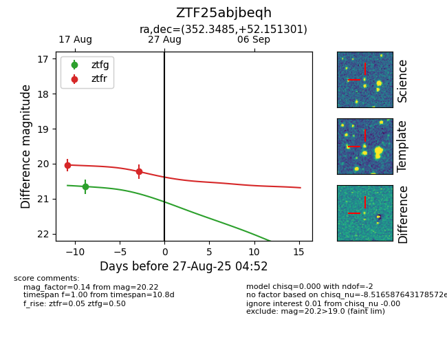

Target ZTF25abjbeqh at 2025-08-27 09:17, see:
FINK: fink-portal.org/ZTF25abjbeqh
Lasair: lasair-ztf.lsst.ac.uk/objects/ZTF25abjbeqh
ALeRCE: alerce.online/object/ZTF25abjbeqh
alt names
ZTF25abjbeqh (ztf,fink)
coordinates:
equatorial (ra, dec) = (352.3485,+52.15130)
galactic (l, b) = (110.3699,-8.70799)
photometry
last ztfg=20.65, ztfr=19.98
1 ztfg, 3 ztfr detections
